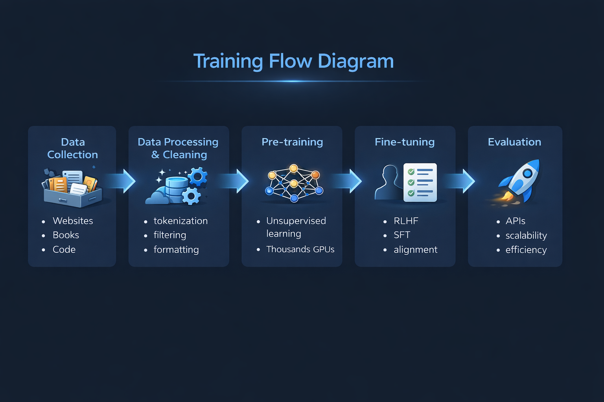

This artifact explores how large language models like GPT-4, Claude, and LLaMA are trained. It highlights the full pipeline from data collection to deployment and analyzes the key resources required.

Thousands of GPUs (A100/H100) required for training.
Trillions of tokens from diverse datasets.
Millions of kWh consumed during training.
Training takes weeks to months.
GPT-4 estimated cost: $100M+
High performance and large-scale compute.
Focus on alignment and AI safety.
Efficient open-weight model.